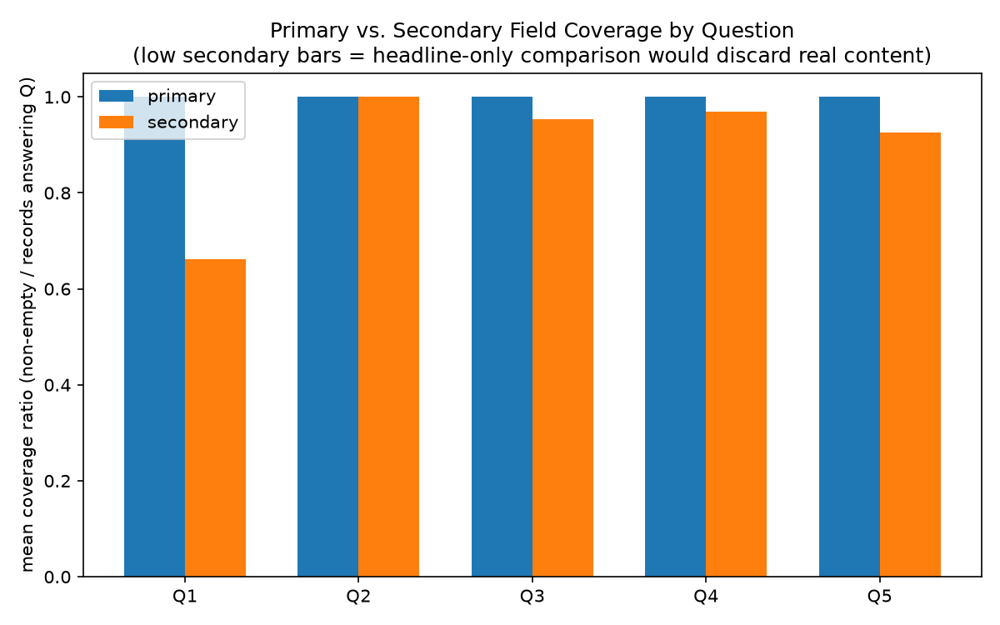
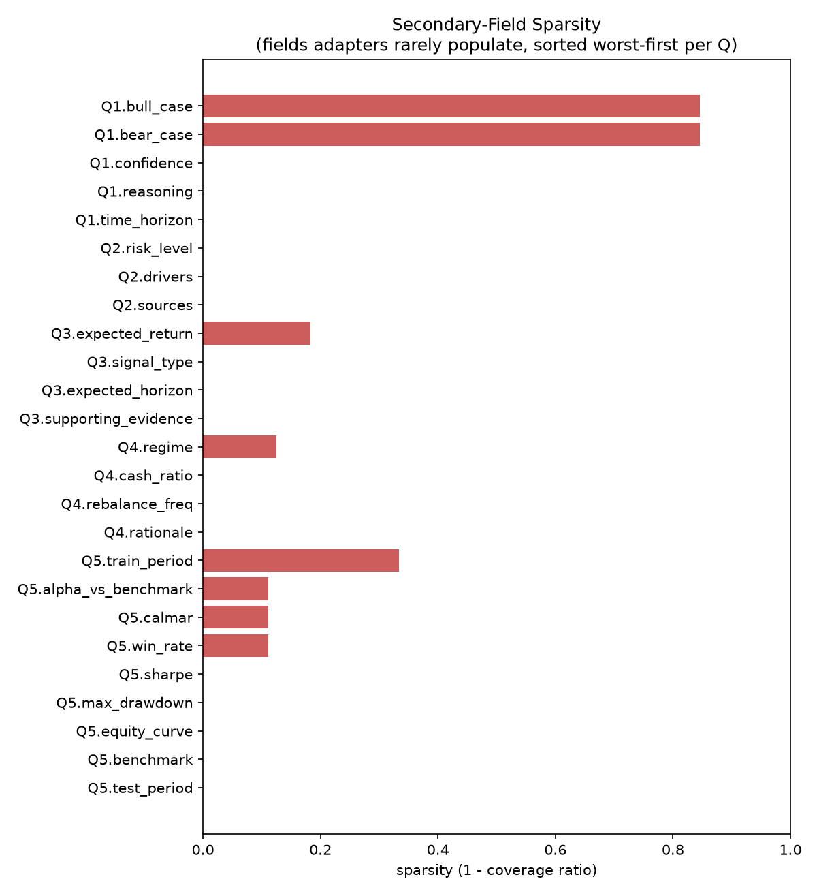
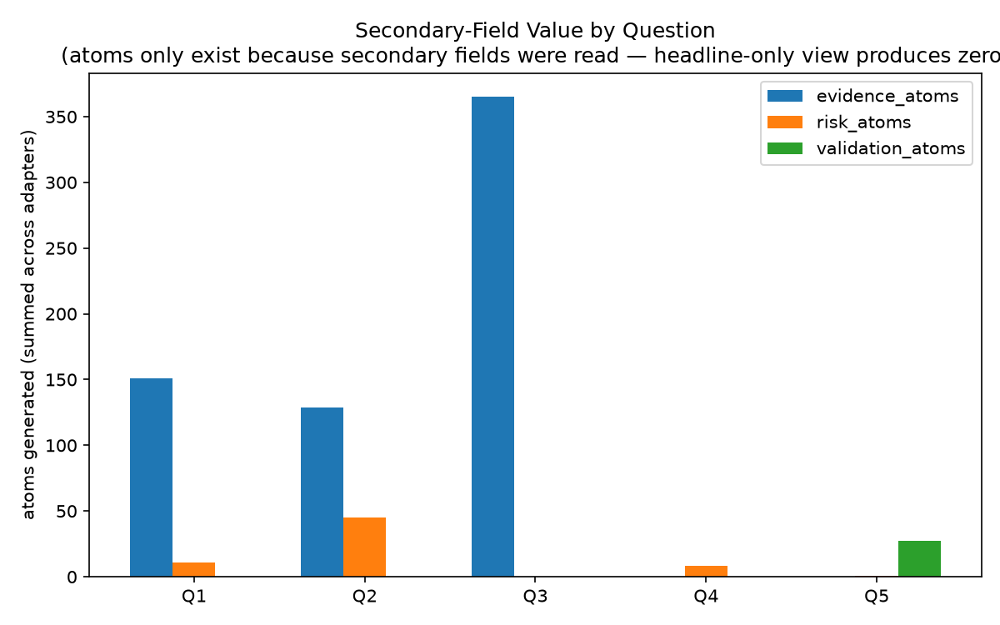
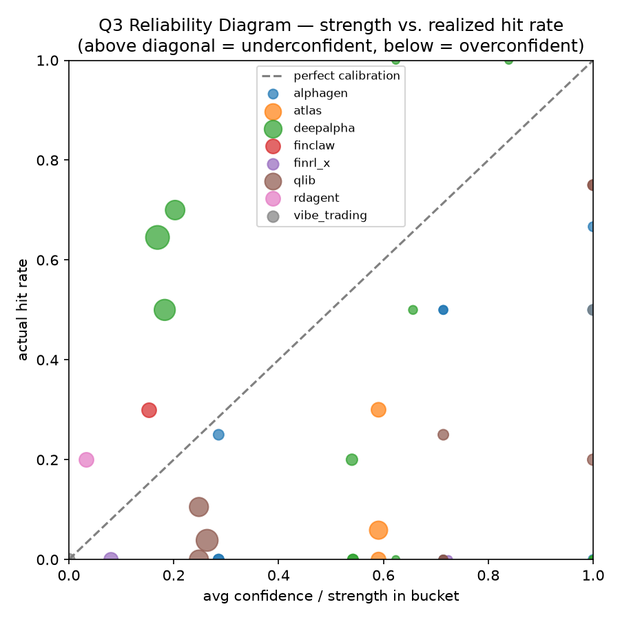
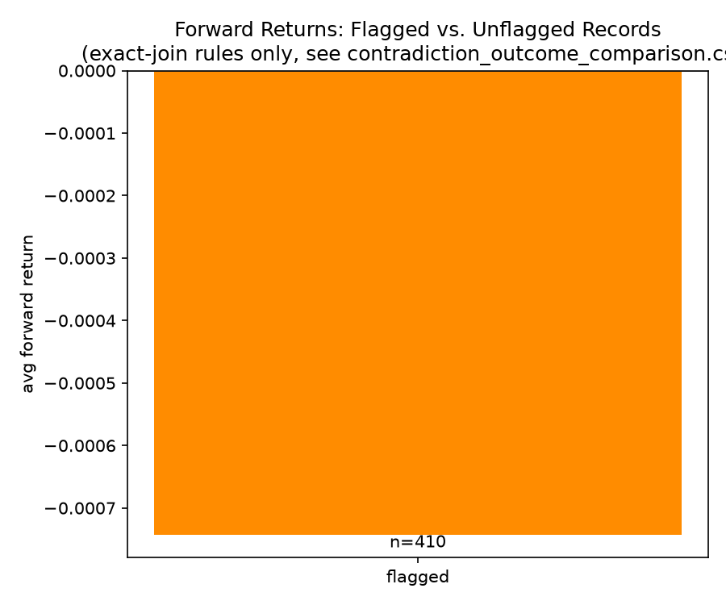
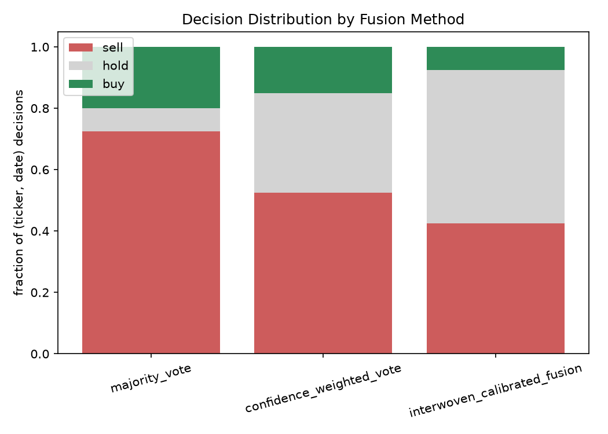

Abstract 摘要
15个真实、经过独立验证的adapter,分别封装15个不同的开源AI trading系统——涵盖LLM多agent辩论框架、深度强化学习、遗传规划因子挖掘、梯度提升回归等完全不同的范式——统一在一套五问输出契约(Q1资产决策、Q2市场情绪/风险、Q3 alpha信号、Q4组合配置、Q5回测验证)之下。本报告记录了针对这15个adapter产出的292条真实、真正调用了upstream API/模型的观测数据(1个当前快照+5个历史决策日,覆盖10只股票与12项资产的宇宙)所做的5个分析实验。我们发现:五问taxonomy在结构上覆盖了全部15个系统,但覆盖密度差2.7倍(Q3有8个adapter,Q1/Q4各只有3个);自报信心(confidence/strength)背后是9个adapter采用的7种互不相通的计算机制,没有一个构成真正校准过的概率;数据中存在129条具体的跨Agent矛盾案例,且只有交织次要字段才能发现;一个"更复杂"的融合方法(信心加权投票)命中率反而不如简单多数投票(57% vs 61%),根因被精确定位到某一个adapter的严重失校准高信心投票主导了加权平均。
1. 项目概述与最终目的
1.1 是什么
trading-ai-ensemble是一个聚合层项目:不自己实现任何交易策略,而是给每一个真实的、已发表/已开源的AI trading系统写一个"薄封装"(adapter),把它原本五花八门的输出格式,翻译成一套统一的五问schema(CONTRACT/schemas.py,只读契约)。用户问同一个问题(比如"NVDA今天该不该买")时,可以同时看到15个不同范式的系统各自怎么回答,以及它们之间一致还是分歧。
1.2 最终目的——三个核心研究问题
不是要证明某一个系统"最准",而是回答三个更基础的问题,直接对应下面实验1-5的设计动机:
- 统一评测是否可行——异构的AI trading系统(LLM决策、RL、遗传算法、因子挖掘)能否被装进同一套schema里做同题对比,而不是各说各话?
- 压缩的代价是什么——把复杂agent的完整输出压缩成"买/卖/持有"这类标题字段,会丢失什么、丢失多少?
- 交织(interweaving)是否有用——把次要字段(风险等级、历史校准、验证结果)交叉引用起来看,能不能发现单看标题字段发现不了的冲突、风险、过度自信,并且能不能把这些发现真正用来做出更好的融合决策?
1.3 系统组成:15个真实adapter
| Adapter | 上游项目 | 范式 | 声明能力 | 真实产出记录数 |
|---|---|---|---|---|
| ai_hedge_fund | virattt/ai-hedge-fund | LLM多agent辩论 | Q1 | 15 |
| tradingagents | TauricResearch/TradingAgents | LLM多agent辩论 | Q1,Q2 | 20 |
| deepalpha | stock-market-prediction-engine | XGBoost+LightGBM集成 | Q1,Q3 | 75 |
| fingpt | AI4Finance/FinGPT | 本地LLM(ChatGLM2-6B) | Q2 | 15 |
| nofx | 0xemmkty/QuantMuse | LLM+量化融合 | Q2 | 10 |
| prediction_arena | Metaculus/forecasting-tools | LLM预测市场 | Q2,Q5 | 11 |
| alphagen | ICT-FinD-Lab/alphagen | 强化学习公式化alpha挖掘 | Q3 | 10 |
| atlas | 遗传算法alpha挖掘 | 遗传规划(DEAP) | Q3 | 17 |
| qlib | microsoft/qlib | Alpha158因子+LightGBM | Q3 | 35 |
| finclaw | finclaw-ai | 遗传算法策略进化 | Q3 | 10 |
| rdagent | microsoft/RD-Agent | LLM-agent因子挖掘闭环 | Q3 | 10 |
| finrl | AI4Finance/FinRL | 深度强化学习 | Q4,Q5 | 12 |
| finrl_x | AI4Finance/FinRL-Trading | ML选股+DRL | Q3,Q4 | 11 |
| vibe_trading | HKUDS/Vibe-Trading | LLM自然语言策略生成 | Q3,Q4,Q5 | 12 |
| agentictrading | Open-Finance-Lab/AgenticTrading | 标准化leaderboard基线 | Q5 | 1 |
2. 数据来源与数据点
2.1 数据采集的三个阶段
| 阶段 | 目的 | 产出 |
|---|---|---|
① 可跑性审计icaif_runnability_audit.py | 用最小探测(单票/单组合,5分钟超时)确认哪些adapter×问题组合真能跑,不做大批量 | 22/22探测成功,0超时,0缺凭证 |
② 主批次观测run_adapter_observation_batch.py | 在真实、多样化的资产宇宙上,对22个可跑组合做完整批量采集 | 157个任务,145成功,12超时,0失败 |
| ③ 历史扩展批次 | 用不需要API key且支持历史日期的adapter,补5个历史交易日,让"未来收益率"有真实数据可查 | 135个任务,104成功,31超时,0失败 |
2.2 资产宇宙(数据点的具体构成)
- Q1/Q2/Q3(单资产层面):NVDA, AAPL, MSFT, TSLA, SPY, QQQ, JPM, XOM, JNJ, GLD(10只,覆盖科技股、大盘指数、金融、能源、医药、贵金属,刻意多元化)
- Q4/Q5(组合层面):上述10只 + TLT(国债ETF)+ CASH,共12项
- 历史扩展的缩小宇宙:NVDA, SPY, QQQ, JPM, GLD(5只,只用于alphagen/atlas/deepalpha/finrl/qlib这5个无需API key且支持历史日期的adapter)
2.3 决策日期
- 当前快照:2026-07-06(所有15个adapter的主批次数据)
- 5个历史日期:2026-05-15、05-21、05-27、06-02、06-08——全部选在距今至少20个交易日之前,这样到采集时点为止,1天/5天/20天期的未来收益率才有真实数据可算,不用等待也不用编造
2.4 未来收益率的计算
用YFinanceFutureReturnProvider拉取真实历史价格,对每条决策记录,严格只用决策日期之后的价格计算未来收益率;如果某个horizon对应的未来交易日还没发生(比如"今天"这个决策日的20天期收益率),该字段就标记insufficient_data,绝不编造。621条(adapter,问题,ticker,日期,horizon)组合里,278条有真实可算的未来收益率(1天期109条、5天期94条、20天期75条)。
3. 方法论总览
5个实验构成一条流水线,后一个依赖前一个的产出,由icaif_experiments.py统一编排:
发现能力+加载数据
纯函数计算
矛盾检测
融合消融
代码分工:icaif_data_loader.py(AST静态解析adapter源码+加载真实结果JSON,从不导入adapter本身)、icaif_metrics.py(覆盖率表/字段统计/原子标签/校准分桶/融合公式等纯函数)、icaif_contradictions.py(8条矛盾规则)、icaif_fusion.py(3种融合方法)、icaif_plots.py(全部图表)。
1 Adapter Coverage Audit 能力覆盖审计
初衷
不能只信任adapter自己questions_answered这个类属性的声明——需要独立验证"声称的能力"和"真实产出的能力"是否一致,这是所有后续实验的地基。
方法论
对每个adapter,用AST静态解析源码(icaif_data_loader.discover_adapters,不执行、不导入,避免15个adapter互不兼容的依赖冲突),得到①questions_declared(类属性声明)、②questions_implemented(哪些q*_方法被真正重写,而非仅返回None的默认桩);再扫描results/目录下真实产出的JSON,得到③observed(真实产出过哪些问题的数据)。三者交叉比对(build_coverage_matrix),不一致的地方全部列入coverage_audit_findings.csv,不隐藏。
数据点
15个adapter的源码文件(静态扫描)+ 264条真实结果JSON(观测确认)。


结果
| 问题 | Q1 | Q2 | Q3 | Q4 | Q5 |
|---|---|---|---|---|---|
| 覆盖adapter数 | 3 | 4 | 8 | 3 | 4 |
结论
15个adapter结构上100%能被Q1-Q5五问taxonomy覆盖,没有一个能力"无处安放"——但覆盖密度极不均匀,Q3是Q1/Q4的2.7倍,反映出这批开源项目本身偏重"因子/信号挖掘"这个范式。同时发现Q4Portfolio缺ticker字段、Q5Backtest连date都没有,这个结构性缺口在实验4里造成37%的案例只能做"尽力而为"对齐。
2 Secondary-Field Value 次要字段价值
初衷
验证"只看标题字段(BUY/SELL、LONG/SHORT)做对比"这种朴素做法,到底会丢失多少真实存在的信息。
方法论
把每个问题的字段分成"标题字段"(如action)和"次要字段"(如reasoning、risk_level),用build_field_coverage统计每个字段在"回答了该问题的记录"里的真实填充率;再用evidence_atoms_from_record——一个12类关键词词典(momentum/valuation/sentiment/volatility/liquidity/macro/earnings/technical/factor/regime/risk/unknown)——把reasoning/drivers/supporting_evidence这类自由文本粗略打标签,生成"evidence atoms"。
数据点
31个字段(5问共22个次要字段+9个标题字段)× 142条Q3记录、65条Q1记录、45条Q2记录、8条Q4记录、9条Q5记录。





结果
| 字段 | 填充率 |
|---|---|
| Q1 reasoning / confidence / time_horizon | 100% |
| Q1 bull_case / bear_case | 15.4% |
| Q2 risk_level / drivers / sources | 100% |
| Q3 signal_type / expected_horizon / supporting_evidence | 100% |
| Q3 expected_return | 81.7% |
| Q4 regime | 87.5% |
| Q5 alpha_vs_benchmark / calmar / win_rate | 88.9% |
| Q5 train_period | 66.7% |
结论
次要字段的信息丢失不是均匀的——大部分解释性字段(reasoning/drivers/supporting_evidence)adapter都认真填了,真正接近摆设的只有bull_case/bear_case。更隐蔽也更危险的丢失是语义层面的:9个adapter的confidence/strength字段类型相同(都是0-1浮点数)但计算原理完全不同,只看数字会误以为可比,这正是实验三要验证的问题。另外,22个次要字段里只有8个被下游规则/融合逻辑真正消费,其余14个目前只停留在"统计过填充率"这一步。
3 Confidence Calibration 信心校准
初衷
adapter说"我有97%把握"的时候,这个数字是不是真的对应97%的实际正确率?这些confidence/strength字段到底是怎么算出来的?
方法论
对每条带confidence(Q1)或strength(Q3)的记录,用YFinanceFutureReturnProvider算出的真实历史价格计算1/5/20天后的实际涨跌方向,按compute_hit规则判定"命中"(BUY命中需未来收益率>threshold_bps=20bp,HOLD命中需|收益率|≤threshold,SELL/SHORT同理反向);再用build_calibration_table把confidence/strength按0.0-0.5/0.5-0.6/…/0.9-1.0分桶,桶内"平均信心"与"实际命中率"之差即为校准误差。同时逐一进入9个adapter的源码,提取confidence/strength的真实计算公式。
数据点
621条(adapter,问题,ticker,日期,horizon)组合,其中278条有真实可算的未来收益率参与最终校准统计。




发现的7种测量机制(不是同一个"信心"概念)
| Adapter | 字段 | 真实计算原理 |
|---|---|---|
| ai_hedge_fund | Q1 confidence | 上游LLM自己嘴上说的0-100分,除以100 |
| tradingagents | Q1 confidence | 写死的映射表{buy:0.85, hold:0.5,...},非真实计算 |
| deepalpha | Q1 confidence | 1-XGBoost与LightGBM预测值的标准差——量的是模型间一致性,不是准确性 |
| deepalpha | Q3 strength | 预测收益率幅度/5%——量的是预测幅度,不是对错 |
| alphagen/atlas/qlib/finrl_x | Q3 strength | 今日因子值在全市场截面排名的百分位距中位数的距离(四者公式完全相同) |
| finclaw | Q3 strength | 内部0-10评分离5的距离 |
| rdagent | Q3 strength | 训练期因子与未来收益的相关系数(静态,不随查询日期变化) |
结果(样本量最大、最可信的几条)
| adapter | 问题 | 周期 | 样本量 | 平均信心 | 实际命中率 | 校准误差 |
|---|---|---|---|---|---|---|
| deepalpha | Q1 | 5天 | 25 | 0.97 | 0.32 | 0.65(全表最差) |
| deepalpha | Q1 | 1天 | 30 | 0.97 | 0.53 | 0.43 |
| qlib | Q3 | 1天 | 25 | 0.41 | 0.08 | 0.33 |
| deepalpha | Q3 | 20天 | 20 | 0.27 | 0.60 | 0.55 |
overconfidence_flags.csv正式标记deepalpha的Q1在1天期和5天期都触发"高信心低命中率"警报(判定阈值:平均信心≥0.75且命中率≤0.55且样本≥10)。结论
9个adapter的自报信心背后是7种互不相通的测量逻辑,没有一个是真正意义上校准过的概率。样本量仍偏小(39个校准分桶里28个样本<10),结论方向可信但精度有限,需要更多历史批次才能收窄置信区间。
4 Cross-Agent Contradiction Detection 跨Agent矛盾检测
初衷
不同adapter对同一件事的判断,到底有多少是互相打架的?这些矛盾能不能被系统性地发现,而不是靠人工偶然翻到?
方法论
8条规则由项目委托方在最初任务brief中逐字指定,不是本报告作者从文献或数据反推得出。在同一(股票,日期)上比对不同adapter的输出;Q1/Q2/Q3三者都带ticker+date可以精确对齐,Q4/Q5缺这些字段,只能按同一次比较批次(task_id)"尽力而为"对齐,这一限制在每条案例记录里显式标注,不隐藏。8条规则:①BUY+高风险 ②看多+验证薄弱 ③情绪乐观+熊市判断 ④高信心+历史校准差 ⑤高仓位+严重回撤 ⑥强信号+无证据 ⑦⑧买卖决策与信号方向冲突(合并计一个标签)。
数据点
292条观测记录,两两/多方交叉对齐后产出129条矛盾案例。




结果
| 规则 | 案例数 | 对齐精度 |
|---|---|---|
| LONG_WITH_WEAK_VALIDATION | 43 | 尽力而为(仅4/43为同一adapter自身Q3+Q5) |
| HIGH_CONFIDENCE_POOR_CALIBRATION | 39 | 精确(100%来自deepalpha) |
| ACTION_ALPHA_DIRECTION_CONFLICT | 27 | 精确(4/27是deepalpha自己跟自己矛盾) |
| BUY_WITH_HIGH_RISK | 15 | 精确 |
| HIGH_WEIGHT_HIGH_DRAWDOWN | 5 | 尽力而为 |
| POSITIVE_SENTIMENT_BEAR_REGIME / STRONG_SIGNAL_MISSING_EVIDENCE | 0 | 数据里从未出现BEAR regime;supporting_evidence 100%填充 |
精确对齐81例(63%),尽力而为48例(37%)。deepalpha一家涉入83次,是最常"和别人打架"、也"和自己历史打架"的adapter。
q1_decision与q3_signal各自独立调用_train_ensemble(ticker),没有固定随机种子、没有缓存,同一票同一天两次训练完全可能得到方向相反的预测——是模型训练不确定性,不是两套推理逻辑良性分歧。结论
纯粹比对BUY/SELL这类标题标签,在结构上不可能发现这129条案例中的任何一条——必须交织次要字段(risk_level、校准表现、验证结果)才行。
5 Fusion Ablation 融合方式消融
初衷
验证"综合考虑更多信息的复杂融合方法,是否真的比简单投票更准"这个直觉假设。
方法论
对每个(股票,日期),收集所有adapter的Q1 action / Q3 direction,映射为{-1,0,+1}:
- A. majority_vote——信号求和取符号,不加权
- B. confidence_weighted_vote——按各自confidence/strength加权平均,缺失置0.5
- C. interwoven_calibrated_fusion——在B的基础上,依次乘以risk_multiplier(按最差Q2风险等级,LOW=1.0/MEDIUM=0.85/HIGH=0.6/EXTREME=0.3)、validation_multiplier(按最差Q5验证状态,strong=1.0/weak=0.65/fail=0.4/missing=0.8)、contradiction_multiplier(每命中一条矛盾规则扣10%,封顶50%)、evidence_boost(≥2个adapter同向且证据标签有交集,乘1.10)
三种方法用完全相同的±0.25阈值转成BUY/HOLD/SELL,再用真实历史收益率打分。
数据点
40个(股票,日期)组,其中30个有真实未来收益率可打分。



结果
| 方法 | 命中率 | 平均收益率 | 决策分布(买/持/卖) |
|---|---|---|---|
| majority_vote | 60.7% | +0.005% | 20%/8%/73% |
| confidence_weighted_vote | 57.1% | -0.11% | 15%/33%/53% |
| interwoven_calibrated_fusion | 57.1%(与B完全相同) | -0.11% | 8%/48%/45% |
结论
目前的interwoven实现没有把"这个adapter历史上准不准"折算进投票权重,只处理了风险/验证/矛盾/证据一致性四个维度,漏了"校准可靠度"这第五个维度——这是让核心论点(交织式融合优于简单投票)真正成立所需的、已被精确定位的下一步修复项。
综合三个核心问题
| 项目最终想回答的问题 | 结论 | 证据链 |
|---|---|---|
| 统一评测是否可行? | 结构上可行,但覆盖极不均匀 | 实验1:15/15adapter都能归入Q1-Q5,但Q3是Q1/Q4的2.7倍 |
| 压缩的代价是什么? | 内容层面丢失有限,语义层面丢失更隐蔽危险 | 实验2+3:大部分次要字段填充率高,但"confidence"一词背后是7种不可比的计算逻辑 |
| 交织是否有用? | 发现层面证据最强,但决策层面(融合)尚未把发现真正用起来 | 实验4:129条真实矛盾,headline对比结构上发现不了任何一条;实验5:发现了根因,但融合公式还没接入这个发现 |
局限性
- 样本量仍偏小:39个校准分桶中28个样本量<10;融合实验仅40个(股票,日期)组;仅5个历史日期
- Q4Portfolio/Q5Backtest缺ticker/date字段,37%的矛盾案例只能"尽力而为"对齐,
train_period/test_period这两个已100%/66.7%填充的字段本可用于部分缓解此问题但目前未使用 - Interwoven融合公式尚未纳入"adapter历史校准可靠度"这一维度,是实验5核心论点尚未坐实的直接原因
- "能力反推"目前只有实验1(覆盖审计)这一层是自动化、可复现的机制;confidence语义分类、adapter确定性检查、资产域适配检查等更深层发现均为本次人工代码审查所得,尚无自动化、可随新adapter接入重复执行的机制
- 尚无正式论文写作(intro/related work/discussion)、无统计显著性检验、无与已发表基准(AMA/PortBench/StockBench等)的正面数值对比
完整数据见本目录下所有*.csv,完整markdown版报告见 EXPERIMENT_REPORT.md,详细问答记录见 EXPERIMENT_QA_NOTES.md 和 PAPER_FINDINGS.md。